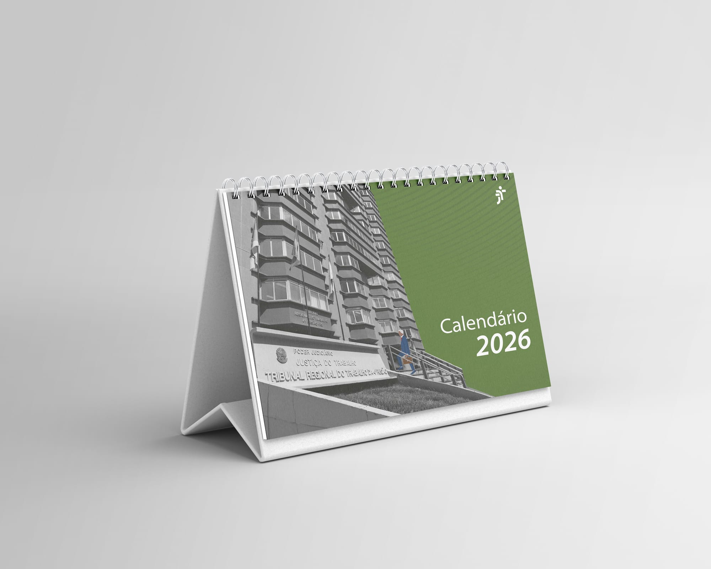
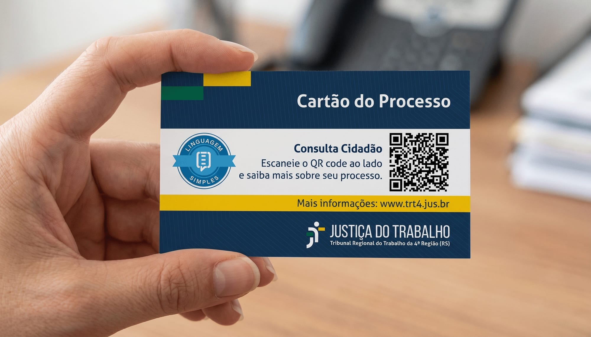
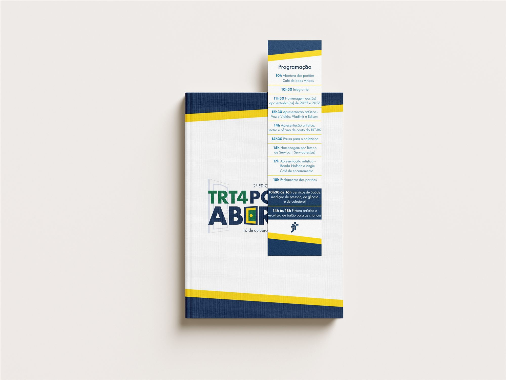
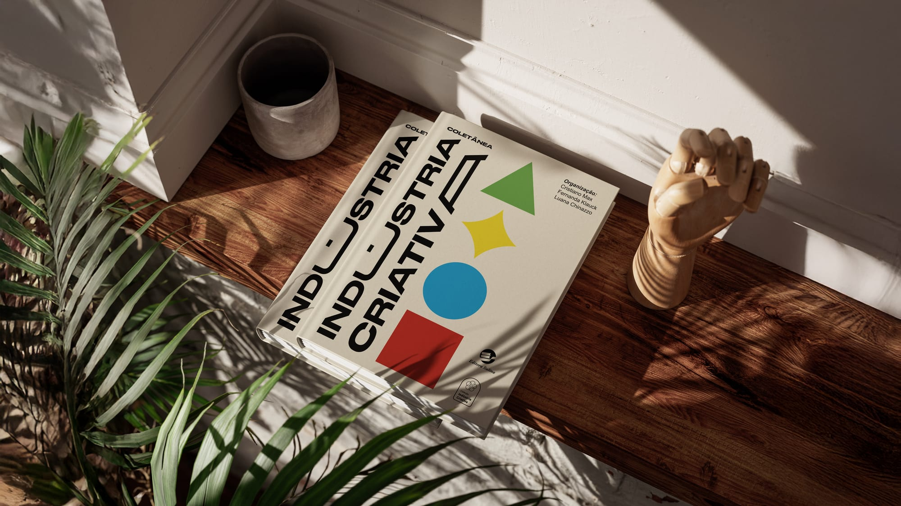
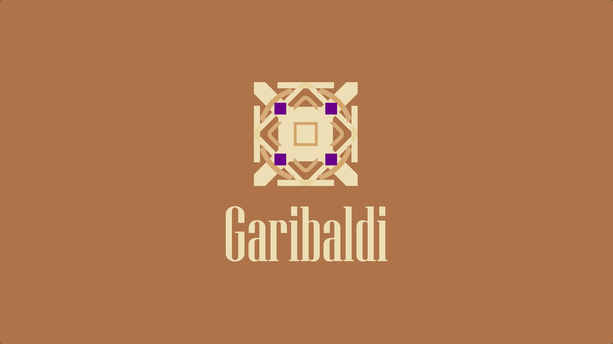
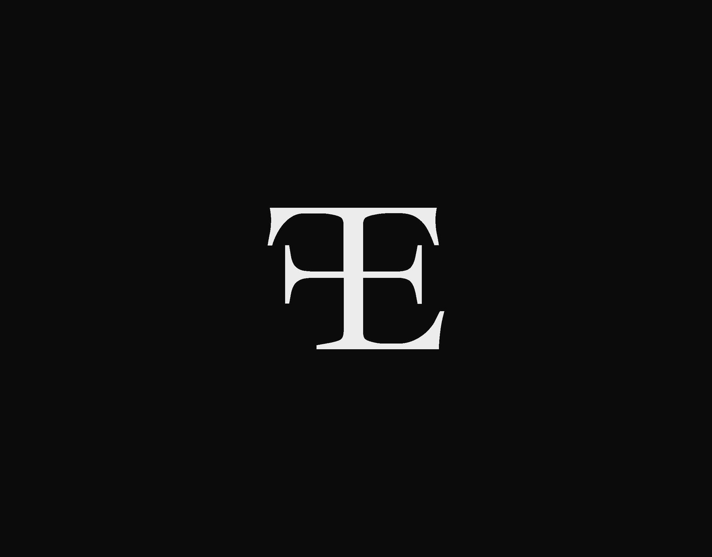

Projetos
Trabalho entregue para clientes, órgãos públicos e projetos coletivos.

Calendário Institucional 2026
2026Calendário institucional de mesa do Tribunal Regional do Trabalho da 4ª Região, criado para divulgar os direitos eleitorais em 2026. Desenvolvido em estilo de fotografia híbrida, teve mais de 4.000 exemplares distribuídos por todo o Rio Grande do Sul.

Cartão do Processo
2026Cartão físico criado pela Justiça do Trabalho gaúcha para facilitar o acesso de trabalhadores e empregadores às informações do processo: número da reclamação, unidade judiciária e QR Code para a Consulta Cidadão.

TRT4 Portas Abertas
2026O Portas Abertas é o evento anual em que o Tribunal Regional do Trabalho da 4ª Região recebe o público em suas instalações. Para a edição de 2026, o projeto envolveu o aprimoramento da marca do evento e o desenvolvimento de todas as peças visuais da comunicação: cartaz, convite, capa de livro, marca-página, crachá e cards digitais.

Coletânea Indústria Criativa
2025Projeto gráfico do livro coletivo do Programa de Pós-Graduação em Comunicação da PUCRS, que reúne reflexões sobre as intersecções entre Indústria Criativa e Comunicação, com foco nos elementos visuais da obra: capa, contracapa, lombada e marca-páginas.

Identificação e Otimização de Rotas
2024Sistema de identificação e sinalização para rotas do município de Garibaldi, com estudo de fluxo de pedestres e hierarquia de informação em sinalização urbana.

CasaFono
2025A marca foi criada para duas fonoaudiólogas que trabalham com atendimento domiciliar humanizado, priorizando a proximidade e o cuidado real. O desafio era traduzir esses valores em uma linguagem acessível e acolhedora, que gerasse confiança e empatia desde o primeiro contato.

Identidade Visual Pessoal
2025Projeto de marca pessoal para apresentar meu trabalho em Design de Comunicação. O ponto de partida foi a combinação entre a formação em TI e o design, que une método e sensibilidade. O desafio era traduzir essa dupla bagagem em uma identidade sóbria, clara e com presença humana.